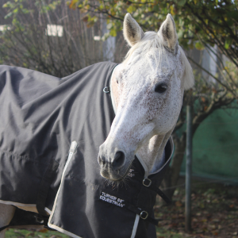
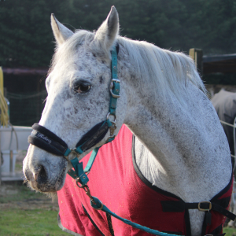
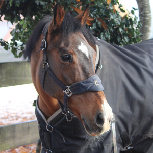
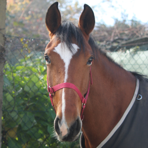
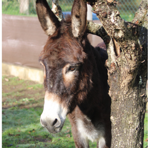
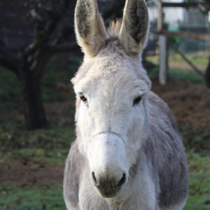

Conoce a la familia
Cada uno de nuestros caballos y burros tiene su propia personalidad y aporta algo único al día a día del centro. Son parte de nuestra familia y se nota en cómo interactúan con quienes los visitan.
Nuestros caballos
Jerjes

Jerjes es un caballo tranquilo y confiable.
Antiguo corredor, ahora disfruta de la vida más calmada al mando de nuestra manada.
Pese a tener el espíritu de un viejo gruñón, siempre es paciente con los que están aprendiendo, ayudando a
que los más novatos se sientan seguros y acompañados.
Pero que no te engañe, es un fantástico maestro para ayudarnos a perfeccionar nuestro nivel de doma.
Ninuca

Si Jerjes es la calma, Ninuca es la chispa.
Esta appaloosa es una yegua con carácter y mucha energía. Participa en las actividades de terapia y siempre
está atenta a lo que pasa a su alrededor.
Es directa y decidida, pero una vez te haces a ella es la mar de divertida, y sabe cómo hacerse querer por
quienes pasan tiempo con ella.
Nardeli

Nardeli es una veterana de concursos de salto y toda una profesional.
Paciente y constante, transmite confianza a quienes la montan o trabajan con ella.
Su experiencia se nota en cada movimiento y en cada tranco, ofreciendo una fuente de aprendizaje sin
límites.
Fue la última incorporación a la familia, y ya se ha hecho un hueco irremplazable en nuestros corazones.
Viana

Viana es la niña de la casa, curiosa y llena de energía.
Sociable y cariñosa, se relaciona con facilidad tanto con los caballos como con las personas y aprende cada
día.
Su actitud abierta y amistosa hace que sea fácil acercarse a ella y disfrutar del tiempo juntos.
Viana te robará el corazón -y las chuches- sin dudarlo.
Nuestros burros
Nuestros burros son inseparables y se complementan a la perfección.
Mimosos a la par que traviesos, les
gusta la compañía de las personas y siempre aportan un toque de alegría y calma al centro.
Bombón

Bombón es el mayor y su paciencia es inmensurable.
Sigue a Pascual allá donde vaya, incluso si eso
implica hacer de escapistas de vez en cuando.
Pascual

Pascu es el más jovencito de los dos. Es una nubecita suave y amable que te robará el corazón a primera vista. Igual que Bombón, tiene muchísimos años de experiencia en terapia, ¡y podemos dar buena cuenta de ello!